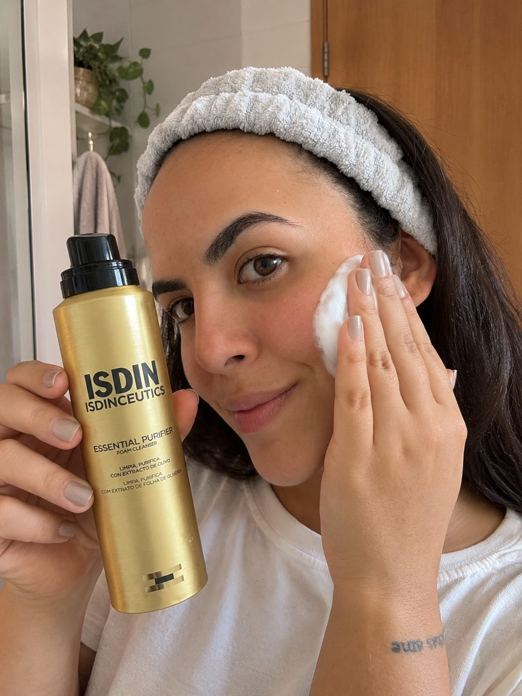
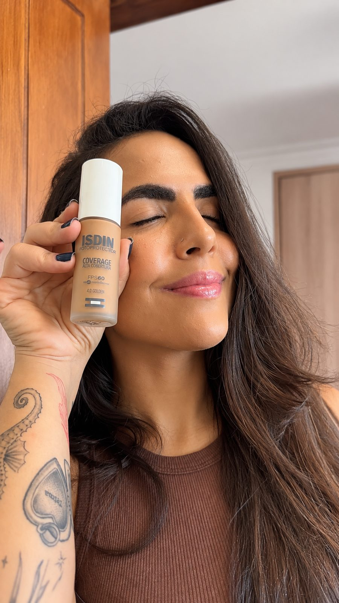

Galeria
Fotos com produto
Além do vídeo, eu entrego fotos pra marca usar no feed, no site e nos anúncios.






Sobre mim
Tenho 25 anos e atualmente trabalho na área de vendas, onde aprendi na prática o que faz uma pessoa decidir comprar: entender a dor do cliente, falar a língua dele e mostrar o valor do produto de forma clara e verdadeira.
Agora quero levar essa experiência para o mundo do conteúdo. Como criadora UGC, transformo produtos em vídeos autênticos e com foco em algo que vai além de visualizações: vídeos que convertem em vendas.
Vitrine
Explico o produto como explico pra uma amiga. Claro, leve, sem cara de propaganda.
Todo vídeo tem gancho, prova e CTA. Venda é o meu expediente há anos.
Casa, academia, corrida, rotina de mãe. O produto aparece onde ele faz sentido.
Arquivo de trabalhos
Vídeos que eu criei pra marcas, organizados por nicho. Toque no play pra assistir.
Formatos
Cada produto pede um jeito de contar. Eu escolho o formato pelo objetivo da marca: alcance, anúncio ou lançamento.
Checklist de formatos
Como funciona
Entendo o produto, o público e onde o vídeo vai rodar.
Defino ângulo, gancho e argumento. Alinho o roteiro com você antes de gravar.
Gravo com o produto em cenário real, fala natural e takes extras.
Vídeo vertical editado, pronto pra publicar ou impulsionar.
Galeria
Além do vídeo, eu entrego fotos pra marca usar no feed, no site e nos anúncios.


Feedbacks
Antes de assinar
As dúvidas mais comuns antes de fechar.
Me conta o produto e o objetivo. Eu volto com uma ideia de vídeo pra sua marca.
Chamar no WhatsAppou no Instagram: @nairacamargoo